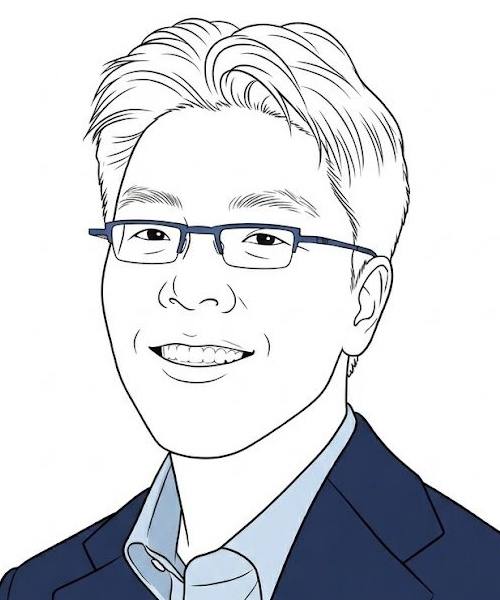

Koungjin Lim
klim6 [at] kennesaw.edu
My research lies at the intersection of corporate strategy, strategic human capital, and entrepreneurship. I examine how major corporate and institutional shocks — mergers and acquisitions, corporate bankruptcy, and changes in law and public policy — shape firm strategy, workforce composition, and individual careers.
Originally from South Korea, I received my Ph.D. in Management from Purdue University, M.Sc. from KAIST, and B.Econ. from Sungkyunkwan University. Before academia, I worked at Samsung Electronics and PwC.
Publications
Teaching
Personal
Outside of work, I'm an avid fan of music and manga—particularly Shinichi Ishizuka's jazz manga Blue Giant (ブルージャイアント) and Naoki Urasawa's Master Keaton (MASTERキートン), and the 80s Japanese rock bands Vow Wow and BOØWY. Weekends are for family.